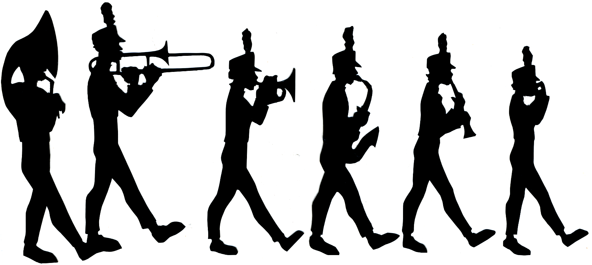

My name is Wesley Freshwater. I am what most people would call a "band geek." My main instrument is the trumpet, but I also play the bass drum. I go to JL Mann High School, where I am in the marching band, concert band and indoor drumline. I have been playing trumpet for 5 years, but this is my second year marching and my second year playing the bass drum. During the school year, my life basically consists of band practice, schoolwork, then some more practice, and maybe a little more practice after that. By Wesley F